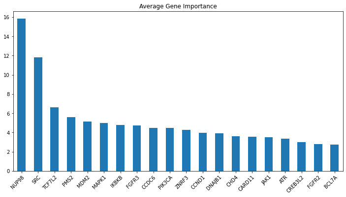

MOGDx PNet
import pandas as pd
import numpy as np
import os
import sys
sys.path.insert(0 , './../')
from MAIN.utils import *
from MAIN.train import *
import MAIN.preprocess_functions
from MAIN.GNN_MME import GCN_MME , GSage_MME , GAT_MME
from Modules.PNetTorch.MAIN.reactome import ReactomeNetwork
from Modules.PNetTorch.MAIN.Pnet import MaskedLinear , PNET
from Modules.PNetTorch.MAIN.utils import numpy_array_to_one_hot, get_gpu_memory
from Modules.PNetTorch.MAIN.interpret import interpret , evaluate_interpret_save , visualize_importances
import torch
import torch.nn.functional as F
import dgl
import matplotlib.pyplot as plt
from sklearn.model_selection import StratifiedKFold
import networkx as nx
from datetime import datetime
import joblib
import warnings
import gc
warnings.filterwarnings("ignore")
print("Finished Library Import \n")
Finished Library Import
data_input = './../../../../data/raw/'
snf_net = 'RPPA_mRNA_graph.graphml'
index_col = 'index'
target = 'paper_BRCA_Subtype_PAM50'
interpret_feat = True
pnet = True
device = torch.device('cuda' if torch.cuda.is_available() else 'cpu')# Get GPU device name, else use CPU
print("Using %s device" % device)
get_gpu_memory()
datModalities , meta = data_parsing(data_input , ['mRNA', 'RPPA' ] , target , index_col)
if interpret_feat :
features = {}
for i , mod in enumerate(datModalities) :
features[i] = list(datModalities[mod].columns)
if pnet :
# List of cancer genes was taken from the PNet paper dataset
genes = pd.read_csv(data_input + './../ext_data/cancer_genes.txt', header=0)
# Build network to obtain gene and pathway relationships
net = ReactomeNetwork(genes_of_interest=np.unique(list(genes['genes'].values)) , n_levels=5)
graph_file = data_input + '../Networks/' + snf_net
g = nx.read_graphml(graph_file)
meta = meta.loc[sorted(meta.index)]
label = F.one_hot(torch.Tensor(list(meta.astype('category').cat.codes)).to(torch.int64))
skf = StratifiedKFold(n_splits=5 , shuffle=True)
print(skf)
MME_input_shapes = [ datModalities[mod].shape[1] for mod in datModalities]
h = reduce(merge_dfs , list(datModalities.values()))
h = h.loc[sorted(h.index)]
g = dgl.from_networkx(g , node_attrs=['idx' , 'label'])
g.ndata['feat'] = torch.Tensor(h.to_numpy())
g.ndata['label'] = label
del datModalities
gc.collect()
output_metrics = []
test_logits = []
test_labels = []
for i, (train_index, test_index) in enumerate(skf.split(meta.index, meta)) :
model = GCN_MME(MME_input_shapes , [16 , 32] , 32 , [16] , len(meta.unique()), PNet=net).to(device)
print(model)
print(g)
g = g.to(device)
loss_plot = train(g, train_index, device , model , label , 2000 , 1e-3 , 100)
plt.title(f'Loss for split {i}')
plt.show()
plt.clf()
sampler = NeighborSampler(
[15 for i in range(len(model.gnnlayers))], # fanout for each layer
prefetch_node_feats=['feat'],
prefetch_labels=['label'],
)
test_dataloader = DataLoader(
g,
torch.Tensor(test_index).to(torch.int64).to(device),
sampler,
device=device,
batch_size=1024,
shuffle=True,
drop_last=False,
num_workers=0,
use_uva=False,
)
test_output_metrics = evaluate(model , g, test_dataloader)
print(
"Fold : {:01d} | Test Accuracy = {:.4f} | F1 = {:.4f} ".format(
i+1 , test_output_metrics[1] , test_output_metrics[2] )
)
test_logits.extend(test_output_metrics[-2])
test_labels.extend(test_output_metrics[-1])
output_metrics.append(test_output_metrics)
if i == 0 :
best_model = model
best_idx = i
elif output_metrics[best_idx][1] < test_output_metrics[1] :
best_model = model
best_idx = i
if interpret_feat :
prev_dim = 0
for i_int , (pnet , dim) in enumerate(zip(model.encoder_dims , model.input_dims)) :
pnet.features = features[i_int]
x = g.ndata['feat'][torch.Tensor(test_index).to(device).to(torch.int) , prev_dim:dim+prev_dim]
if i_int == 0 :
model_importances_cv = interpret(pnet , x , savedir='None' , plot=False)
for layer in model_importances_cv.keys() :
model_importances_cv[layer] = model_importances_cv[layer].fillna(0)
model_importances_cv['Features'] = (model_importances_cv['Features'] - model_importances_cv['Features'].mean().mean())/model_importances_cv['Features'].mean().std()
model_importances_cv['Features'] = model_importances_cv['Features'].abs().mean(axis=0)
else :
model_importances_tmp = interpret(pnet , x , savedir='None', plot=False)
model_importances_tmp['Features'] = (model_importances_tmp['Features'] - model_importances_tmp['Features'].mean().mean())/model_importances_tmp['Features'].mean().std()
model_importances_tmp['Features'] = model_importances_tmp['Features'].abs().mean(axis=0)
for layer in model_importances_cv.keys() :
model_importances_tmp[layer] = model_importances_tmp[layer].fillna(0)
if layer == 'Features' :
model_importances_cv[layer] = pd.concat([model_importances_cv[layer] , model_importances_tmp[layer]])
else :
model_importances_cv[layer] += model_importances_tmp[layer]
prev_dim += dim
model_importances_cv = {k: (v.divide(i_int+1) if k != 'Features' else v) for k, v in model_importances_cv.items()}
if i == 0 :
model_importances = model_importances_cv
else :
for layer in model_importances.keys() :
if layer == 'Features' :
model_importances[layer] += model_importances_cv[layer]
else :
model_importances[layer] = pd.concat([model_importances[layer] , model_importances_cv[layer]] , axis=0).reset_index(drop=True)
get_gpu_memory()
del model
gc.collect()
torch.cuda.empty_cache()
print('Clearing gpu memory')
get_gpu_memory()
test_logits = torch.stack(test_logits)
test_labels = torch.stack(test_labels)
if interpret_feat :
model_importances = {k: (v.divide(i+1)) for k, v in model_importances.items()}
accuracy = []
F1 = []
i = 0
for metric in output_metrics :
accuracy.append(metric[1])
F1.append(metric[2])
print("%i Fold Cross Validation Accuracy = %2.2f \u00B1 %2.2f" %(5 , np.mean(accuracy)*100 , np.std(accuracy)*100))
print("%i Fold Cross Validation F1 = %2.2f \u00B1 %2.2f" %(5 , np.mean(F1)*100 , np.std(F1)*100))
confusion_matrix(test_logits , test_labels , meta.astype('category').cat.categories)
plt.title('Test Accuracy = %2.1f %%' % (np.mean(accuracy)*100))
precision_recall_plot , all_predictions_conf = AUROC(test_logits, test_labels , meta)
node_predictions = []
node_true = []
display_label = meta.astype('category').cat.categories
for pred , true in zip(all_predictions_conf.argmax(1) , list(test_labels.detach().cpu().argmax(1).numpy())) :
node_predictions.append(display_label[pred])
node_true.append(display_label[true])
preds = pd.DataFrame({'Actual' : node_true , 'Predicted' : node_predictions})
Using cuda device
Total = 6.4Gb Reserved = 0.0Gb Allocated = 0.0Gb
StratifiedKFold(n_splits=5, random_state=None, shuffle=True)
GCN_MME(
(encoder_dims): ModuleList(
(0): PNET(
(dropout): Dropout(p=0.5, inplace=False)
(layers): ModuleList(
(0): Linear(in_features=29995, out_features=723, bias=True)
(1): MaskedLinear(in_features=723, out_features=1613, bias=True)
(2): MaskedLinear(in_features=1613, out_features=1107, bias=True)
(3): MaskedLinear(in_features=1107, out_features=488, bias=True)
(4): MaskedLinear(in_features=488, out_features=159, bias=True)
(5): MaskedLinear(in_features=159, out_features=28, bias=True)
)
(skip): ModuleList(
(0): Linear(in_features=723, out_features=32, bias=True)
(1): Linear(in_features=1613, out_features=32, bias=True)
(2): Linear(in_features=1107, out_features=32, bias=True)
(3): Linear(in_features=488, out_features=32, bias=True)
(4): Linear(in_features=159, out_features=32, bias=True)
(5): Linear(in_features=28, out_features=32, bias=True)
)
(act_layers): ModuleList(
(0-5): 6 x ReLU()
)
(norm_layers): ModuleList(
(0): BatchNorm1d(723, eps=1e-05, momentum=0.1, affine=True, track_running_stats=True)
(1): BatchNorm1d(1613, eps=1e-05, momentum=0.1, affine=True, track_running_stats=True)
(2): BatchNorm1d(1107, eps=1e-05, momentum=0.1, affine=True, track_running_stats=True)
(3): BatchNorm1d(488, eps=1e-05, momentum=0.1, affine=True, track_running_stats=True)
(4): BatchNorm1d(159, eps=1e-05, momentum=0.1, affine=True, track_running_stats=True)
(5): BatchNorm1d(28, eps=1e-05, momentum=0.1, affine=True, track_running_stats=True)
)
)
(1): PNET(
(dropout): Dropout(p=0.5, inplace=False)
(layers): ModuleList(
(0): Linear(in_features=464, out_features=723, bias=True)
(1): MaskedLinear(in_features=723, out_features=1613, bias=True)
(2): MaskedLinear(in_features=1613, out_features=1107, bias=True)
(3): MaskedLinear(in_features=1107, out_features=488, bias=True)
(4): MaskedLinear(in_features=488, out_features=159, bias=True)
(5): MaskedLinear(in_features=159, out_features=28, bias=True)
)
(skip): ModuleList(
(0): Linear(in_features=723, out_features=32, bias=True)
(1): Linear(in_features=1613, out_features=32, bias=True)
(2): Linear(in_features=1107, out_features=32, bias=True)
(3): Linear(in_features=488, out_features=32, bias=True)
(4): Linear(in_features=159, out_features=32, bias=True)
(5): Linear(in_features=28, out_features=32, bias=True)
)
(act_layers): ModuleList(
(0-5): 6 x ReLU()
)
(norm_layers): ModuleList(
(0): BatchNorm1d(723, eps=1e-05, momentum=0.1, affine=True, track_running_stats=True)
(1): BatchNorm1d(1613, eps=1e-05, momentum=0.1, affine=True, track_running_stats=True)
(2): BatchNorm1d(1107, eps=1e-05, momentum=0.1, affine=True, track_running_stats=True)
(3): BatchNorm1d(488, eps=1e-05, momentum=0.1, affine=True, track_running_stats=True)
(4): BatchNorm1d(159, eps=1e-05, momentum=0.1, affine=True, track_running_stats=True)
(5): BatchNorm1d(28, eps=1e-05, momentum=0.1, affine=True, track_running_stats=True)
)
)
)
(gnnlayers): ModuleList(
(0): GraphConv(in=32, out=16, normalization=both, activation=None)
(1): GraphConv(in=16, out=5, normalization=both, activation=None)
)
(batch_norms): ModuleList(
(0): BatchNorm1d(16, eps=1e-05, momentum=0.1, affine=True, track_running_stats=True)
)
(drop): Dropout(p=0.5, inplace=False)
)
Graph(num_nodes=1076, num_edges=18312,
ndata_schemes={'idx': Scheme(shape=(), dtype=torch.int64), 'label': Scheme(shape=(5,), dtype=torch.int64), 'feat': Scheme(shape=(30459,), dtype=torch.float32)}
edata_schemes={})
Epoch 00000 | Loss 1.7193 | Train Acc. 0.2198 |
<Figure size 432x288 with 0 Axes>
Fold : 5 | Test Accuracy = 0.8837 | F1 = 0.8644
Save Path Not Found - Plots will not be saved
Linear(in_features=29995, out_features=723, bias=True)
MaskedLinear(in_features=723, out_features=1613, bias=True)
MaskedLinear(in_features=1613, out_features=1107, bias=True)
MaskedLinear(in_features=1107, out_features=488, bias=True)
MaskedLinear(in_features=488, out_features=159, bias=True)
MaskedLinear(in_features=159, out_features=28, bias=True)
Save Path Not Found - Plots will not be saved
Linear(in_features=464, out_features=723, bias=True)
MaskedLinear(in_features=723, out_features=1613, bias=True)
MaskedLinear(in_features=1613, out_features=1107, bias=True)
MaskedLinear(in_features=1107, out_features=488, bias=True)
MaskedLinear(in_features=488, out_features=159, bias=True)
MaskedLinear(in_features=159, out_features=28, bias=True)
Total = 6.4Gb Reserved = 1.5Gb Allocated = 0.4Gb
Clearing gpu memory
Total = 6.4Gb Reserved = 1.2Gb Allocated = 0.4Gb
5 Fold Cross Validation Accuracy = 85.60 ± 1.57
5 Fold Cross Validation F1 = 82.77 ± 2.15
model_layers_importance = {}
model_layers_importance_fig= {}
for i, layer in enumerate(model_importances):
if i == 0 :
fig = plt.figure(figsize=(12,6))
model_importances['Features'].sort_values(ascending=False)[:20].plot(kind='bar')
plt.xticks(rotation=45, ha='right', rotation_mode='anchor')
plt.title('Input Feature Importance')
plt.show()
model_layers_importance_fig['Feature Importance'] = fig
else :
layer_title = f"Pathway Level {i} Importance" if i > 1 else "Gene Importance"
model_layers_importance[layer_title] = layer
model_layers_importance_fig[layer_title] = visualize_importances(
model_importances[layer], title=f"Average {layer_title}")

importances = model_importances['Gene Importance']
importances = (importances - importances.mean().mean())/importances.mean().std()
importances = importances.abs().mean(axis=0)
gse = importances.sort_values(ascending=False).reset_index()
gse.columns = ['ids' , 'score']
gse.to_csv('C:/Users/Barry/Downloads/gene_enrichment.rnk' , sep='\t' , header=True , index = False)
get_gpu_memory()
#del model , train_loader , test_loader
torch.cuda.reset_accumulated_memory_stats()
gc.collect()
torch.cuda.empty_cache()
get_gpu_memory()
Total = 6.4Gb Reserved = 1.2Gb Allocated = 0.4Gb
Total = 6.4Gb Reserved = 1.2Gb Allocated = 0.4Gb
# test the model
print("Testing...")
acc = layerwise_infer(
device, g, np.arange(len(g.nodes())), best_model, batch_size=4096
)
print("Test Accuracy {:.4f}".format(acc.item()))
Testing...
100%|██████████| 1/1 [00:00<00:00, 30.75it/s]
100%|██████████| 1/1 [00:00<00:00, 36.35it/s]
Test Accuracy 0.9089
best_model.eval()
with torch.no_grad():
emb = best_model.embedding_extraction(
g, g.ndata['feat'] ,device, 4096
) # pred in buffer_device
tsne_embedding_plot(emb.detach().cpu().numpy() , meta)
100%|██████████| 1/1 [00:00<00:00, 44.48it/s]